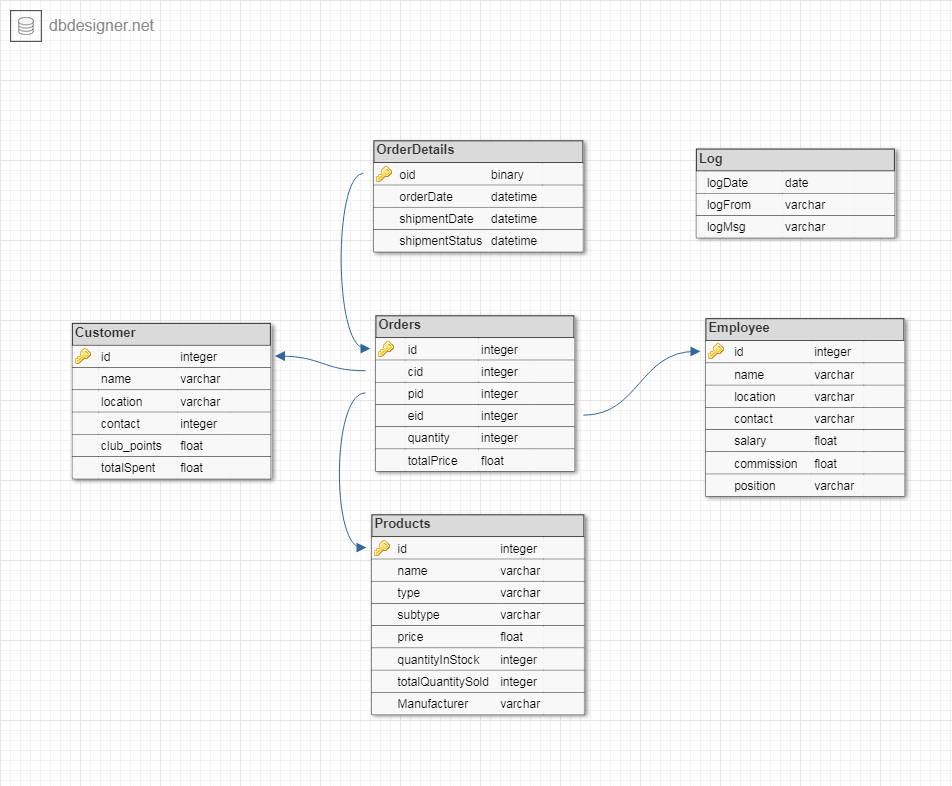

Tables
So, The database will contain 6 tables. The tables are:
- Customers : contains id, name, location, contact, club points and total spent. Id is the primary key. Contact must be unique. Club points and total spent will be default to 0.
- Employees : contains id, name, location, contact, position, salary and commission. Id is the primary key. Contact must be unique. Salary and commission will be default to 0.
- Products : contains id, name, manufacturer, type, subtype, price, quantity in stock and total quantity sold so far(from the beginning of company). Id is the primary key. Price and quantityInStock should be greater than 0.
- Orders : contains id, customer id, employee id, product id, quantity and total price. Id is the primary key. Quantity and total price should be greater than 0.
- OrderDetails : contains order id, order date, possible shipping date(automatically three days from order date), shipment status. Order id is both the primary key and foreign key. Order id references from id of Orders table.
- Log : contains logDate, logFrom(whether logging from trigger, procedure, function etc) and logMsg. This table is completely disassociated from other tables as this table is created for debugging and logging purposes.
A schema using the free database designer tool from dbDesigner is presented below:

Functions or Procedures?
Functions and procedures are interchangeable in Oracle. The main difference between function and procedure is that, it is mandatory for functions to return values. Procedures can achieve this by using OUT, IN OUT type parameters. But, one big difference between functions and procedures is that stored functions can be used in SQL queries. Procedures can't be used in queries that way. I will try to keep a 50:50 ratio between the amount procedures and functions.
Design decisions for the requirements
So, the main idea here is to take decisions about whether procedures or functions will be used to implement the various requirements. The requirements will also be discussed extensively.
- Admin can set discount on all or specific type of product
Implementation type : Procedure
Description : As discount will be set for a limited amount of time, there must be a way to revert the products to their original prices. So, the procedure has to save the initial prices of all the products in the Products table into a file and then perform the discount setting logic.
- Admin can remove discount on all or specific type of product
Implementation type : Function
Description : This function will read the previously written file and update the price of the products from the file. Due to the nature of the discount procedure, if a product is deleted from the products table when a discount is in place, the product will reappear after the reset discount procedure has been called.
- Admin can calculate gross sale for a month
Implementation type : Function
Description : Self explanatory.
- Admin can calculate total salary + commission to be paid to employees for a month
Implementation type : Function
Description : Self explanatory.
- Admin can pay the commission to all or specific employee any time
Implementation type : Procedure
Description : Self Explanatory.
- Admin can get single customer or employee info
Implementation type : Procedure
Description : Self Explanatory(I am starting to regret my decision of including a Description section).
- Admin can get info of most sold products by category
Implementation type : Function
Description : Self Explanatory. Using function to keep the 50:50 ratio.
- Admin can get the info of top 10 most spending customers
Implementation type : Procedure
Description : This details will be printed using DBMS_OUTPUT.
- Admin can get a list of products that are less than 10 available in stock
Implementation type : Function
Description : Self explanatory.
- Admin can award club points to customers
Implementation type : Procedure
Description : Self explanatory.
- Admin can update current shipment status of all the orders
Implementation type : Procedure
Details : By default, the possible shipment date is set to three days from the order date and shipment status is set to 'processing'. This function will compare the shipment date with SYSDATE and if it has already been three days from order date, will update the shipment status to 'shipped'.
- Admin can restock all or specific products
Implementation type : Procedure
Details : Self explanatory.
- All commission of an employee must be cleared before admin can delete an employee
Implementation type : Trigger
Details : Self explanatory.
- Customer can't order products that are unavailable in stock
Implementation type : Trigger
Details : This should raise an error.
- Customer can delete an order.
Implementation type : Trigger
Details : This is pretty complex. Deleting an order should reduce the appropriate amount of commission from the employee, reduce club points and total spent amount from the customer. This should also delete the order details. As deleting a order from the middle will create a gap in the sequential order id's , this should also decrement all the id's of the Orders and Order Details table by 1.
- Customer gets 5% of total order price(not including club point discount price) as club points
Implementation type : Trigger
Details : Although seems easy at first, this has hidden complications. If Customer uses club points to pay the order price, Then total amount - used club points will be considered for club points. 1 club point is equivalent to 1 unit of money.
- Customer can use club points to buy products
Implementation type : Trigger
Details : Trigger will automatically reduce the club points and add the actual amount of money used for the specific customer in the customer table. But there is a catch. If there is not enough club points then it should raise an application error. There was another choice though. The trigger could also use up all the club points and add the remaining to the total cash used. But I refrained from doing that because in real world scenario a customer might want to save up his club points.
- Every operation (including procedures, function calls, triggers, updates, deletions) are tracked in a table with date
Implementation type : Functions, Procedures, Triggers
Details : Everything will have a DML statement that will log the details with a date and log message in the log table.
- Operators gets 2% commission on the total price of the order
Implementation type : Trigger
Details : Self explanatory.